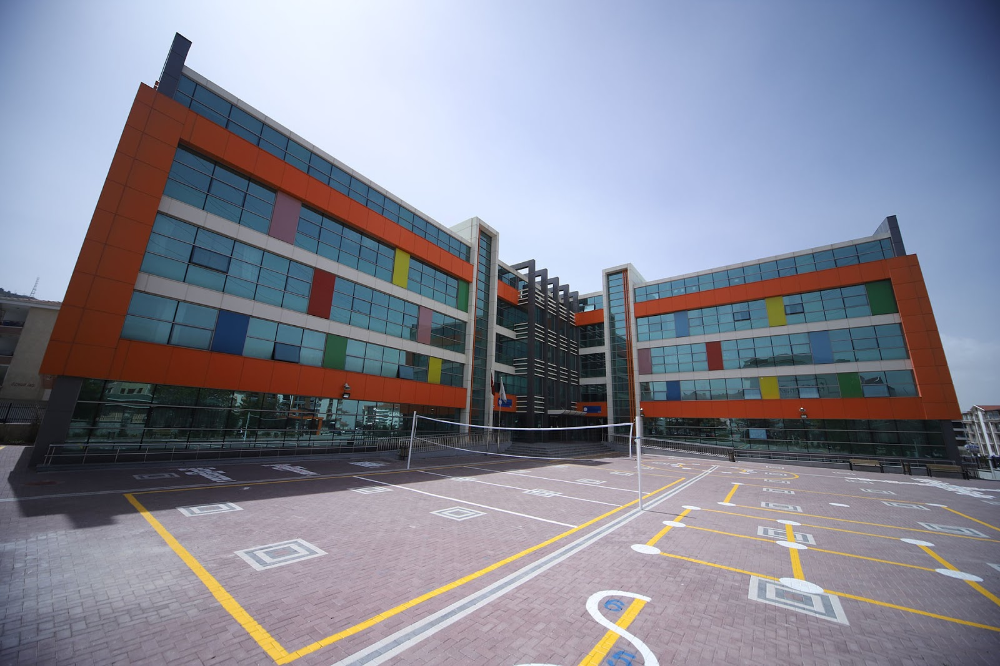

ABOUT US
WHO ARE WE?
As Mersin College, first of all, you are all welcome. As you know, we made our opening as of last week. We will start our classes as soon as possible with our expert staff in the field. As Mersin College, we recommend that you take advantage of the numerous opportunities we offer before it's too late. Remember, a good future is achieved as a result of perseverance, stability and discipline. If you are also dreaming of a good future, this is not possible without visiting us.
CORPORATE
Pioneering education in Turkey, Mersin College successfully continues its story that started with a three-class classroom in Laleli in 1968 as a global education brand that brings quality education together with new generations in Turkey and all over the world in 2022. Enver Yücel continues his education career, which he started in 1974 when he was only 17 years old, as the visionary founder of Mersin College, which he has transformed into a global education brand today. Believing that all the problems in the world can be solved through education, it is constantly working to establish an education perception in our country that is contemporary and oriented to the needs of the future.
VISION & MİSSİON
In today's world, where new paradigms are starting to settle in all fields, from production to economy, from politics to communication, education is also transforming and changing. In our world where all production, consumption, ways of doing business, and even daily life routines have changed, it is not possible, not true, to raise the individuals of the future with the education approach of the past century. That is why, as part of our vision of a world school, we are changing the codes of education and presenting the education of the future to Mersin College students today. While Mersin College pioneers the education approach that has started to be implemented in the leading countries of the world in Turkey, it also implements educational models that set an example for the world education sector.